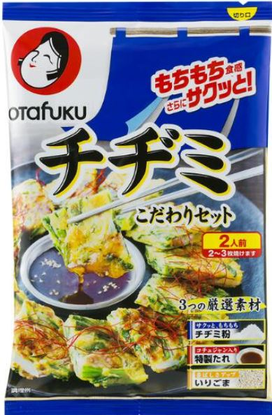

KonamonCH
- ■Evaluation Criteria (※The key question: Can I recommend it to my past self?)
- 5.0 God-tier
- 4.5 I’d strongly recommend it to my past self. Definitely want to eat it again.
- 4.0 I’d recommend it to my past self. Would like to eat it again.
- ----------------------------------The 4.0 Wall ↑ Can it go beyond just “tasty” and make me actually want to eat it again?
- 3.5 Pretty good.
- 3.0 Average.
- 2.0 Not tasty.
- 1.0 Terrible.
- Chijimi (Otafuku)

- ★★★ (3.0)
- Just okay. Ate too much and felt kinda sick — finished about 2–3 servings (one whole pack).
- 25/11/1